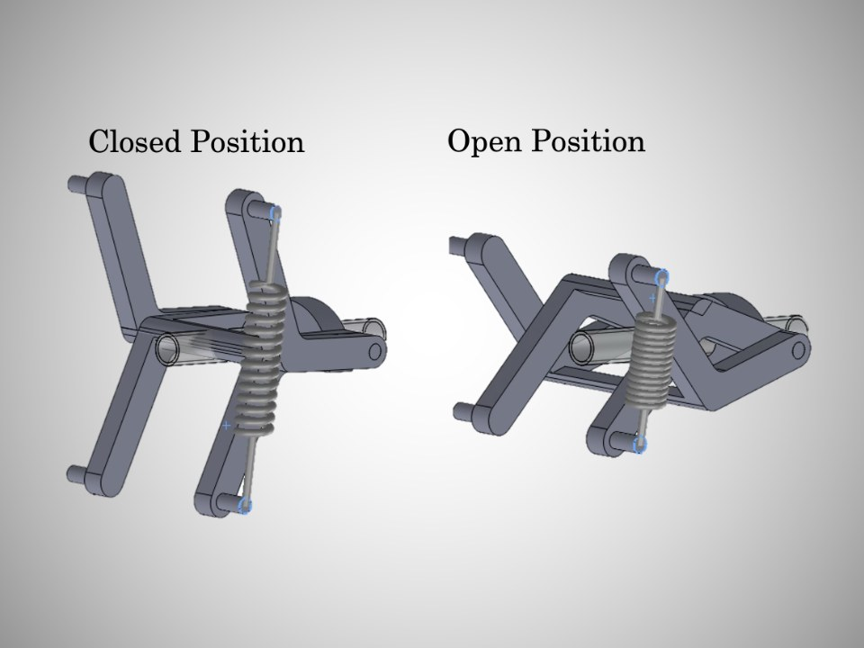

System definition & modelling
- Defined valve geometry, spring stiffness, and energy parameters.
- Derived analytical equations for strain energy, force balance, and motion dynamics.
Project write-up · Mechanism analysis · Engineering
Energy-efficient snap-through flow control for an embedded 3D printer.
Completed
This project developed and analysed a bi-stable clamp valve for precise, energy-efficient flow control in an embedded 3D printer. The bi-stable snap-through mechanism enables rapid state switching without continuous power input, offering a lightweight valve solution that works with high-viscosity Carbopol 980 gels.
The bi-stable clamp valve was developed as an active flow-control mechanism for embedded 3D printing, replacing bulky syringe-driven systems with a lightweight, low-energy, mechanically efficient alternative.
A custom Python-based computational framework was developed to generate, filter, and analyse thousands of clamp configurations, identifying those that satisfy force, stability, and fatigue constraints.
The valve’s snap-through motion was analysed using dynamic modelling and ODE integration to assess speed, controllability, and flow-control suitability for high-performance printing.
Structural analysis was performed to ensure that clamp designs meet strength, fatigue, and actuation-force constraints while maintaining bistability and durability.
The analysis confirmed that the bi-stable clamp valve is a mechanically robust, low-energy, and fast-acting solution for flow regulation in embedded 3D printing. It enables precise, repeatable gel extrusion and reduces actuator mass and power demand — making it suitable for integration into embedded 3D printers.
Interested in this project or a collaboration? Get in touch ↗